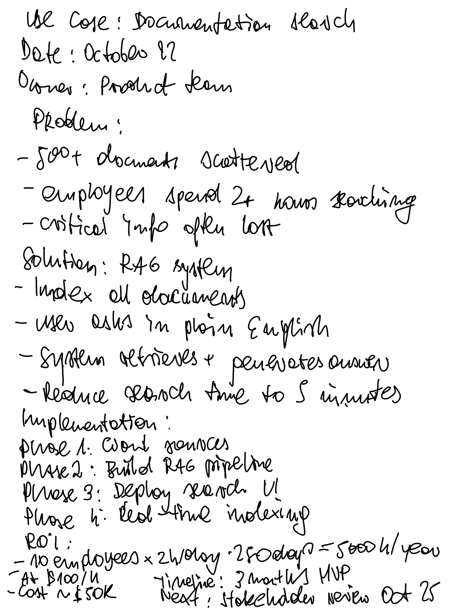
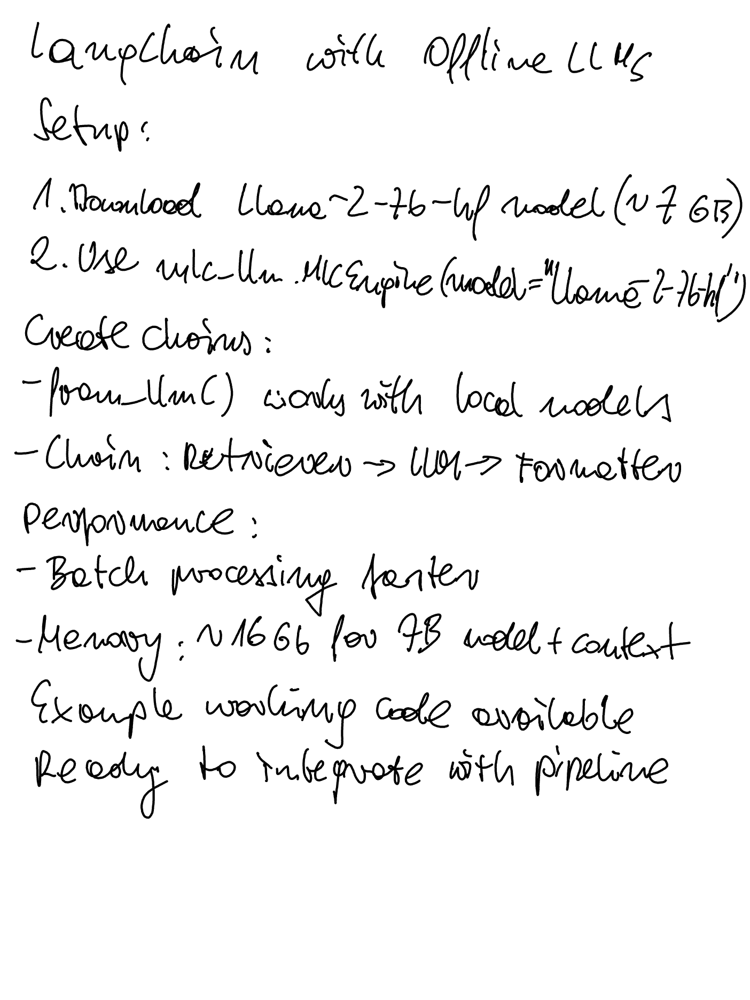

flowchart LR
In(Input PDF) --> Vision[<b>Vision Specialist</b><br/>TrOCR + Craft]
subgraph Brain ["🧠 The Brain (CrewAI)"]
direction TB
Vision --> RawText(Raw Text)
RawText --> Classify[<b>Librarian</b><br/>Topic Classification]
RawText --> Correct[<b>Senior Editor</b><br/>Contextual Cleanup]
end
Correct --> JSON{Structured JSON}
Classify --> JSON
JSON --> Graph[<b>Graph Builder</b><br/>NetworkX + Semantics]
Graph --> Viz((<b>Knowledge<br/>Graph</b>))
style In fill:#fff,stroke:#333,stroke-width:2px,color:#000
style Vision fill:#ff9e64,color:#000,stroke:#333
style Brain fill:#24283b,stroke:#7aa2f7,stroke-width:2px,stroke-dasharray: 5 5,color:#fff
style Classify fill:#7aa2f7,color:#000
style Correct fill:#7aa2f7,color:#000
style Graph fill:#9ece6a,color:#000
style Viz fill:#bb9af7,color:#000,stroke:#fff,stroke-width:2px
From Handwritten Notes to Smart Knowledge
Build Local AI Agents with Python
Piotr Stepinski
About Me
- Leading Data Science and Dev teams for Infinittii AI
- Specializing in Industrial IoT (Water Management Platforms)
- Goal Today: Show the Agentic approach to knowledge management.
The Fragmentation Thesis
We live in a world of documents.
- 📓 Meeting Notes (Scribbled fast)
- 📖 Research Papers (Complex jargon)
- 💡 Confluence Pages (Scattered ideas)
The Reality: We have all the data, but the knowledge is trapped.
Why Not Just Use Cloud AI?
Sure, GPT-4o is great. But…
- Privacy: Do you want sensitive documents on a public API?
- Cost: Processing 1000s of pages gets expensive.
- Ownership: We must own our data and processing pipeline.
Goal: Build a 100% Local Pipeline for RAG 2.0 Knowledge Synthesis.
The Architecture: Agentic Pipeline
We replace the “Generic VLM” with a Specialized Crew.
System Design
Why this split? TrOCR is the “Eye” (reads shapes). The LLM is the “Brain” (understands context). Separating them prevents the hallucination common in generic multimodal models.
Phase 1: The “Eye” (Preprocessing)
Standard OCR fails on thin pen strokes. We use a Split Pipeline approach.
The Split Pipeline Trick
We use two versions of the image: one for finding text, one for reading it.
def _run(self, file_path):
# 1. Image A: Clean & Sharp (For Detection)
# Prevents "blobs" and ghost boxes
img_detect = enhance_contrast(original_img)
regions = craft_detector.detect_text(img_detect)
# 2. Image B: Dilated & Thick (For Reading)
# Makes faint ballpoint pen look like a bold marker
img_read = preprocess_for_trocr(original_img)
# (Contrast ++, Dilation 2x2)
# 3. Crop from Image B using coordinates from Image A
for box in regions:
crop = img_read.crop(box)
text = trocr_model(crop)Phase 2: Semantic Synthesis
Let’s look at two seemingly disconnected files.
The Input Data
Note 10: “Use Case - RAG”

Text: “Phase 2: Build RAG pipeline”, “Solution: RAG System”
Note 03: “LangChain Setup”

Text: “Chain: Retriever -> LLM”, “Ready to integrate with pipeline”
The Connection Revealed
The Graph Builder linked the Strategic Goal (Note 10) with the Technical Solution (Note 03).
Why they connected:
- ✅ “Pipeline” (Exact Keyword Match)
- ✅ “RAG System” ≈ “Retriever + LLM” (Semantic Architecture Match)
🔮 Live Demo
Scenario: Processing the full batch. Watch the Graph Builder connect the dots live.
(Switching to Terminal…)
Summary: The Local Stack
| Component | Technology | Why? |
|---|---|---|
| Vision | TrOCR + Craft | High-fidelity data acquisition |
| Logic | CrewAI + Qwen | Contextual correction & synthesis |
| Graph | NetworkX | Relationship Discovery |
| Viz | PyVis | Interactive exploration |
Outcome: A private, zero-cost pipeline for RAG 2.0 knowledge synthesis.
Thank You!
Code & Slides

github.com/stepinski/pydata-agent
Piotr Stepinski @stepinski

PyData Global 2025 | Local AI Agents